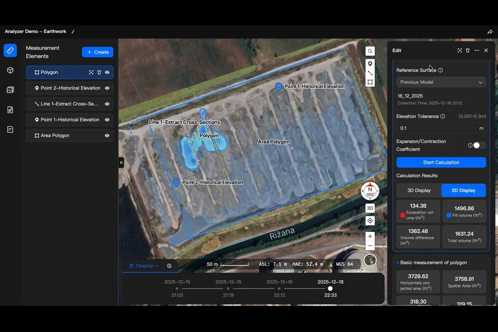
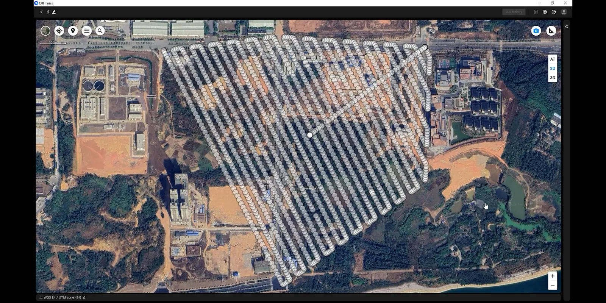
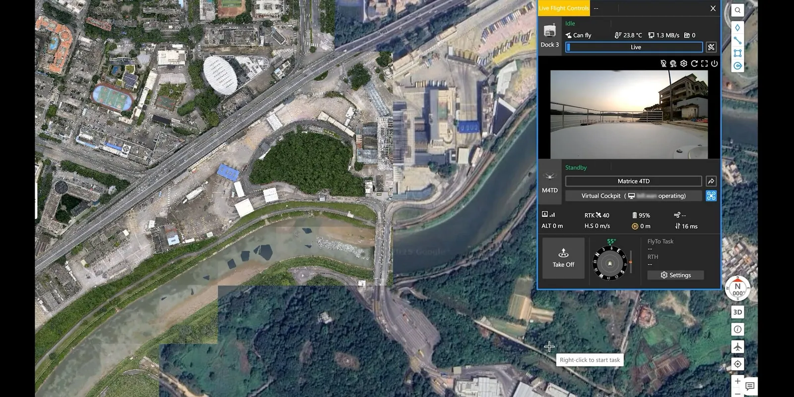
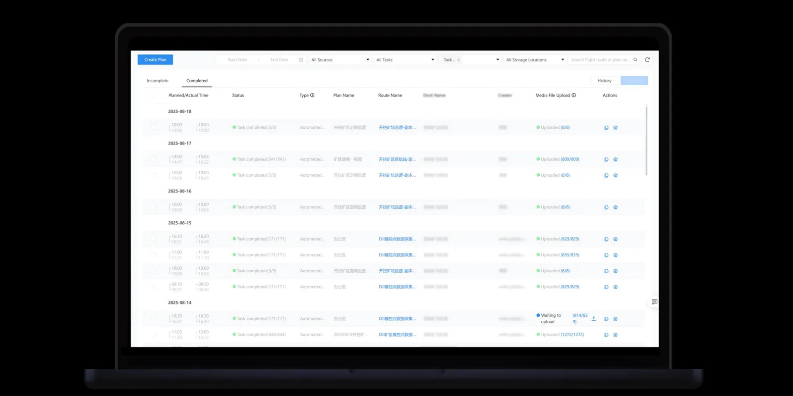
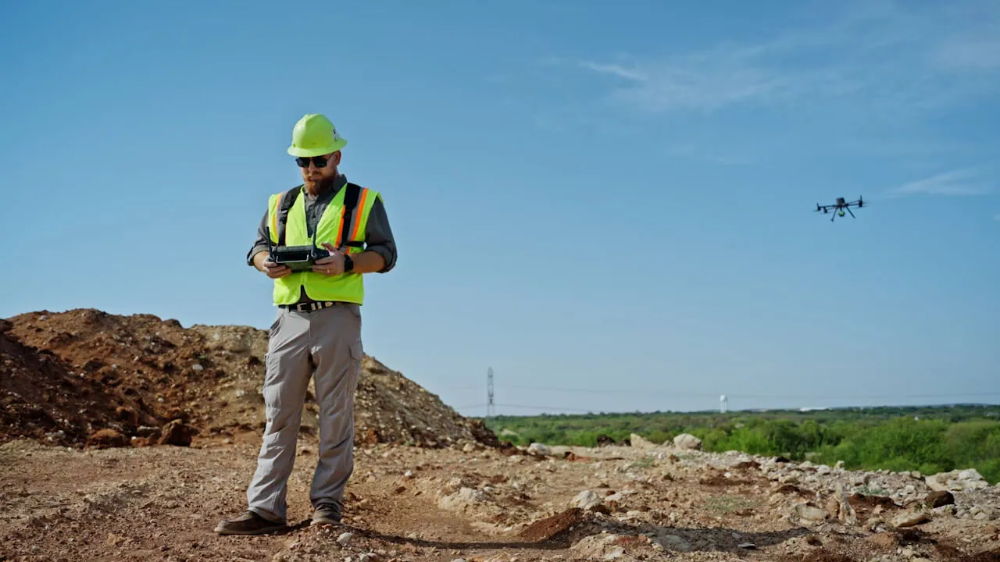

Единая цифровая система для O&M
Комплексное решение, которое закрывает весь цикл инспекции. Это не просто дрон и не отдельный софт — это единая операционная система для эксплуатации солнечных активов.

Drone Data
Автономный сбор мультиспектральных данных и телеметрии.

AI Platform
Автоматическая аналитика и генерация отчётов.
Maintenance
Планирование маршрутов и контроль устранения дефектов.
Цифровая подготовка: точность до 5 сантиметров


Цифровая диспетчерская:
абсолютный контроль


От пикселя к ремонту: O&M Workflow

Step 1: Обнаружение
AI выявляет дефект и присваивает ему приоритет.

Step 2: Автоматизация задач
Платформа генерирует Work Order с точными GPS-координатами и типом проблемы.

Step 3: Маршрутизация бригады
Инженер получает задачу с построенным маршрутом, закрытие идёт по фотоотчёту.
Эффект для заказчика
Практический бизнес-результат
Стоимость инспекций. Автоматизация вместо ручного труда.
Ускорение поиска. AI вместо визуального осмотра.
Потери выработки. Раннее выявление дефектов.
Прозрачность O&M. Полная видимость процессов.